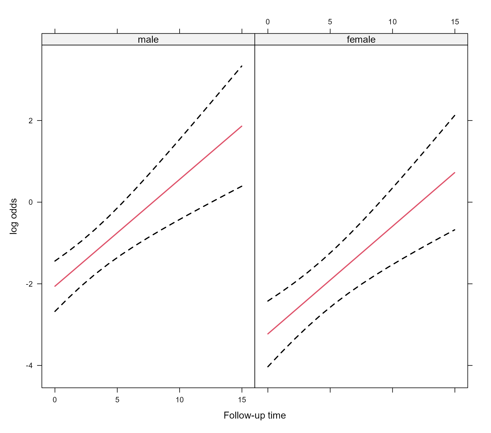

In this vignette we illustrate the use of a number of basic generic
functions for models fitted by the mixed_model() function
of package GLMMadaptive.
We start by simulating some data for a binary longitudinal outcome:
set.seed(1234)
n <- 100 # number of subjects
K <- 8 # number of measurements per subject
t_max <- 15 # maximum follow-up time
# we construct a data frame with the design:
# everyone has a baseline measurement, and then measurements at random follow-up times
DF <- data.frame(id = rep(seq_len(n), each = K),
time = c(replicate(n, c(0, sort(runif(K - 1, 0, t_max))))),
sex = rep(gl(2, n/2, labels = c("male", "female")), each = K))
# design matrices for the fixed and random effects
X <- model.matrix(~ sex * time, data = DF)
Z <- model.matrix(~ time, data = DF)
betas <- c(-2.13, -0.25, 0.24, -0.05) # fixed effects coefficients
D11 <- 0.48 # variance of random intercepts
D22 <- 0.1 # variance of random slopes
# we simulate random effects
b <- cbind(rnorm(n, sd = sqrt(D11)), rnorm(n, sd = sqrt(D22)))
# linear predictor
eta_y <- as.vector(X %*% betas + rowSums(Z * b[DF$id, ]))
# we simulate binary longitudinal data
DF$y <- rbinom(n * K, 1, plogis(eta_y))We continue by fitting the mixed effects logistic regression for
y assuming random intercepts and random slopes for the
random-effects part.
fm <- mixed_model(fixed = y ~ sex * time, random = ~ time | id, data = DF,
family = binomial())As in the majority of model-fitting functions in R, the
print() and summary() methods display a short
and a detailed output of the fitted model, respectively. For
'MixMod' objects we obtain
fm
#>
#> Call:
#> mixed_model(fixed = y ~ sex * time, random = ~time | id, data = DF,
#> family = binomial())
#>
#>
#> Model:
#> family: binomial
#> link: logit
#>
#> Random effects covariance matrix:
#> StdDev Corr
#> (Intercept) 0.6866
#> time 0.2516 0.6421
#>
#> Fixed effects:
#> (Intercept) sexfemale time sexfemale:time
#> -2.059256329 -1.167646870 0.261720034 0.001924039
#>
#> log-Lik: -358.8167and
summary(fm)
#>
#> Call:
#> mixed_model(fixed = y ~ sex * time, random = ~time | id, data = DF,
#> family = binomial())
#>
#> Data Descriptives:
#> Number of Observations: 800
#> Number of Groups: 100
#>
#> Model:
#> family: binomial
#> link: logit
#>
#> Fit statistics:
#> log.Lik AIC BIC
#> -358.8167 731.6334 749.8696
#>
#> Random effects covariance matrix:
#> StdDev Corr
#> (Intercept) 0.6866
#> time 0.2516 0.6421
#>
#> Fixed effects:
#> Estimate Std.Err z-value p-value
#> (Intercept) -2.0593 0.3148 -6.5418 < 1e-04
#> sexfemale -1.1676 0.4687 -2.4914 0.012724
#> time 0.2617 0.0564 4.6416 < 1e-04
#> sexfemale:time 0.0019 0.0784 0.0245 0.980429
#>
#> Integration:
#> method: adaptive Gauss-Hermite quadrature rule
#> quadrature points: 11
#>
#> Optimization:
#> method: hybrid EM and quasi-Newton
#> converged: TRUEThe output is rather self-explanatory. However, just note that the
fixed-effects coefficients are on the linear predictor scale, and hence
are the corresponding log-odds for the intercept and log-odds ratios for
the rest of the parameters. The summary() only shows the
estimated coefficients, standard errors and p-values, but no confidence
intervals. These can be separately obtained using the
confint() method, i.e.,
exp(confint(fm))
#> 2.5 % Estimate 97.5 %
#> (Intercept) 0.06882234 0.1275488 0.2363868
#> sexfemale 0.12415508 0.3110981 0.7795255
#> time 1.16323718 1.2991628 1.4509714
#> sexfemale:time 0.85915613 1.0019259 1.1684203By default the confidence intervals are produced for the fixed effects. Hence, taking the exp we obtain the confidence intervals for the corresponding odds-ratios. In addition, by default, the level of the confidence intervals is 95%. The following piece of code produces 90% confidence intervals for the variances of the random intercepts and slopes, and for their covariance:
confint(fm, parm = "var-cov", level = 0.90)
#> 5 % Estimate 95 %
#> var.(Intercept) 0.05933052 0.47137731 3.7450638
#> cov.(Int)_time -0.03389691 0.11092919 0.8946559
#> var.time 0.02080103 0.06332475 1.1791406The estimated variance-covariance matrix of the maximum likelihood
estimates of all parameters is returned using the vcov()
method, e.g.,
vcov(fm)
#> (Intercept) sexfemale time sexfemale:time
#> (Intercept) 0.099090653 -0.075080806 -0.008307369 0.0061994690
#> sexfemale -0.075080806 0.219651868 0.005994192 -0.0176917575
#> time -0.008307369 0.005994192 0.003179307 -0.0029822531
#> sexfemale:time 0.006199469 -0.017691758 -0.002982253 0.0061519595
#> D_11 -0.084195792 -0.018971508 0.007909564 0.0017690997
#> D_12 0.015162556 0.003613583 -0.001596509 -0.0004200977
#> D_22 -0.070093274 -0.015881668 0.008848043 -0.0001001191
#> D_11 D_12 D_22
#> (Intercept) -0.084195792 0.0151625559 -0.0700932741
#> sexfemale -0.018971508 0.0036135829 -0.0158816681
#> time 0.007909564 -0.0015965093 0.0088480433
#> sexfemale:time 0.001769100 -0.0004200977 -0.0001001191
#> D_11 0.396907472 -0.0893637436 0.3946528694
#> D_12 -0.089363744 0.0334276597 -0.1687014953
#> D_22 0.394652869 -0.1687014953 0.9794435264The elements of this covariance matrix that correspond to the
elements of the covariance matrix of the random effects (i.e., the
elements D_xx) are on the log-Cholesky scale.
Robust standard errors using the sandwich estimator can be obtained
by setting the logical argument sandwich to
TRUE, i.e.,
vcov(fm, sandwich = TRUE)
#> (Intercept) sexfemale time sexfemale:time
#> (Intercept) 0.099829786 -0.070550265 -0.005233661 0.0024339698
#> sexfemale -0.070550265 0.214013057 0.003087999 -0.0183675115
#> time -0.005233661 0.003087999 0.002916981 -0.0026872952
#> sexfemale:time 0.002433970 -0.018367512 -0.002687295 0.0061916760
#> D_11 -0.077748513 -0.015166344 0.005751513 0.0034121316
#> D_12 0.016066748 -0.004892440 -0.001306620 -0.0002096652
#> D_22 -0.065502779 0.027713018 0.004082104 0.0020789909
#> D_11 D_12 D_22
#> (Intercept) -0.077748513 0.0160667482 -0.065502779
#> sexfemale -0.015166344 -0.0048924400 0.027713018
#> time 0.005751513 -0.0013066201 0.004082104
#> sexfemale:time 0.003412132 -0.0002096652 0.002078991
#> D_11 0.236518585 -0.0483403917 0.175823519
#> D_12 -0.048340392 0.0194701856 -0.096578096
#> D_22 0.175823519 -0.0965780957 0.598680870The use of robust standard errors via the sandwich
argument is also available in the summary(),
confint(), anova(),
marginal_coefs(), effectPlotData(),
predict(), and simulate() methods.
To extract the estimated fixed effects coefficients from a fitted
mixed model, we can use the fixef() method. Similarly, the
empirical Bayes estimates of the random effects are extracted using the
ranef() method, and finally the coef() method
returns the subject-specific coefficients, i.e., the sum of the fixed
and random effects coefficients:
fixef(fm)
#> (Intercept) sexfemale time sexfemale:time
#> -2.059256329 -1.167646870 0.261720034 0.001924039
head(ranef(fm))
#> (Intercept) time
#> 1 -0.3764536 -0.122065606
#> 2 0.6675107 0.289646664
#> 3 0.4843611 0.215634477
#> 4 -0.2083419 -0.006681441
#> 5 0.2373342 0.162463265
#> 6 -0.3690096 -0.184228112
head(coef(fm))
#> (Intercept) sexfemale time sexfemale:time
#> 1 -2.435710 -1.167647 0.13965443 0.001924039
#> 2 -1.391746 -1.167647 0.55136670 0.001924039
#> 3 -1.574895 -1.167647 0.47735451 0.001924039
#> 4 -2.267598 -1.167647 0.25503859 0.001924039
#> 5 -1.821922 -1.167647 0.42418330 0.001924039
#> 6 -2.428266 -1.167647 0.07749192 0.001924039The fixed effects estimates in mixed models with nonlinear link
functions have an interpretation conditional on the random effects.
However, often we wish to obtain parameters with a marginal / population
averaged interpretation, which leads many researchers to use generalized
estimating equations, and dealing with potential issues with missing
data. Nonetheless, recently Hedeker et al. have
proposed a nice solution to this problem. Their approach is implemented
in function marginal_coefs(). For example, for model
fm we obtain the marginalized coefficients using:
marginal_coefs(fm)
#> (Intercept) sexfemale time sexfemale:time
#> -1.6023 -1.0956 0.1765 0.0508The function calculates the marginal log odds ratios in our case
(because we have a binary outcome) using a Monte Carlo procedure with
number of samples determined by the M argument.
Standard errors for the marginalized coefficients are obtained by
setting std_errors = TRUE in the call to
marginal_coefs(), and require a double Monte Carlo
procedure for which argument K comes also into play. To
speed up computations, the outer Monte Carlo procedure is performed in
parallel using package parallel and number of cores
specified in the cores argument (results not shown):
marginal_coefs(fm, std_errors = TRUE, cores = 5)The fitted() method extracts fitted values from the
fitted mixed model. These are always on the scale of the response
variable. The type argument of fitted()
specifies the type of fitted values computed. The default is
type = "mean_subject" which corresponds to the fitted
values calculated using only the fixed-effects part of the linear
predictor; hence, for the subject who has random effects values equal to
0, i.e., the “mean subject”:
Setting type = "subject_specific" will calculate the
fitted values using both the fixed and random effects parts, where for
the latter the empirical Bayes estimates of the random effects are
used:
head(fitted(fm, type = "subject_specific"))
#> 1 2 3 4 5 6
#> 0.08048986 0.08197442 0.09997322 0.23877793 0.24377249 0.24418982Finally, setting type = "marginal" will calculate the
fitted values based on the multiplication of the fixed-effects design
matrix with the marginalized coefficients described above (due to the
required computing time, these fitted values are not displayed):
The residuals() method simply calculates the residuals
by subtracting the fitted values from the observed repeated measurements
outcome. Hence, this method also has a type argument with
exactly the same options as the fitted() method.
To display the estimated longitudinal evolution of the binary outcome we can use an effect plot. This is simply predictions from the models with the corresponding 95% pointwise confidence intervals.
As a first step we create a data frame the provides the setting based
on which the plot is to be produced; function expand.grid()
is helpful in this regard:
Next we use the effectPlotData() function that does the
heavy lifting, i.e., calculates the predictions and confidence intervals
from a fitted mixed model for the data frame provided above, i.e.,
plot_data <- effectPlotData(fm, nDF)Then we can produce the plot using for example the
xyplot() function from package lattice,
e.g.,
library("lattice")
xyplot(pred + low + upp ~ time | sex, data = plot_data,
type = "l", lty = c(1, 2, 2), col = c(2, 1, 1), lwd = 2,
xlab = "Follow-up time", ylab = "log odds")
expit <- function (x) exp(x) / (1 + exp(x))
xyplot(expit(pred) + expit(low) + expit(upp) ~ time | sex, data = plot_data,
type = "l", lty = c(1, 2, 2), col = c(2, 1, 1), lwd = 2,
xlab = "Follow-up time", ylab = "Subject-Specific Probabilities")
The effectPlotData() function also allows to compute
marginal predictions using the marginalized coefficients described
above. This is achieved by setting marginal = TRUE in the
respective call (results not shown):
plot_data_m <- effectPlotData(fm, nDF, marginal = TRUE, cores = 2)
# we put the two groups in the same panel
my.panel.bands <- function(x, y, upper, lower, fill, col, subscripts, ..., font,
fontface) {
upper <- upper[subscripts]
lower <- lower[subscripts]
panel.polygon(c(x, rev(x)), c(upper, rev(lower)), col = fill, border = FALSE, ...)
}
xyplot(expit(pred) ~ time, group = sex, data = plot_data_m,
upper = expit(plot_data_m$upp), low = expit(plot_data_m$low),
type = "l", col = c("blue", "red"),
fill = c("#0000FF80", "#FF000080"),
panel = function (x, y, ...) {
panel.superpose(x, y, panel.groups = my.panel.bands, ...)
panel.xyplot(x, y, lwd = 2, ...)
}, xlab = "Follow-up time", ylab = "Marginal Probabilities")In addition to using the effectPlotData() function, the
same type of effect plots can be produced by the effects
package. For example, based on the fm model we produce the
effect plot for time and for the two groups using the call
to predictorEffect() and its plot()
method:
library("effects")
plot(predictorEffect("time", fm), type = "link")The type argument controls the scale of the y-axis,
namely, type = "link" corresponds to the log-odds scale. If
we would like to obtain the figure in the probability scale, we should
set type = "response", i.e.,
plot(predictorEffect("time", fm), type = "response")For the additional functionality provided by the effects
package, check the vignette:
vignette("predictor-effects-gallery", package = "effects").
Note: Effects plots via the effects
package are currently only supported for the binomial() and
poisson() families.
The anova() method can be used to compare two fitted
mixed models using a likelihood ratio test. For example, we test if we
can test the null hypothesis that the covariance between the random
intercepts and slopes is equal to zero using:
gm <- mixed_model(fixed = y ~ sex * time, random = ~ time || id, data = DF,
family = binomial())
anova(gm, fm)
#>
#> AIC BIC log.Lik LRT df p.value
#> gm 730.94 746.57 -359.47
#> fm 731.63 749.87 -358.82 1.31 1 0.2523Using the predict() method we can calculate predictions
for new subjects. As an example, we treat subject 1 from the
DF dataset as a new patient (in the code below we change
his id variable):
pred_DF <- DF[DF$id == 1, ][1:4, ]
pred_DF$id <- paste0("N", as.character(pred_DF$id))
pred_DF
#> id time sex y
#> 1 N1 0.0000000 male 0
#> 2 N1 0.1424363 male 0
#> 3 N1 1.7055512 male 0
#> 4 N1 9.1391210 male 0We start by computing predictions based only on the fixed-effects part of the model; because of the nonlinear link function, these predictions are of subjects with random effects value equal to zero, which is not to the average predictions:
predict(fm, newdata = pred_DF, type_pred = "response",
type = "mean_subject", se.fit = TRUE)
#> $pred
#> 1 2 3 4
#> 0.1131204 0.1169146 0.1661892 0.5824003
#>
#> $se.fit
#> 1 2 3 4
#> 0.3147867 0.3111087 0.2828457 0.4612954Population averaged predictions can be obtained by first calculating
the marginalized coefficients (using marginal_coefs()) and
multiplying them with the fixed effects design matrix; this is achieved
using the option type = "marginal" (due to the required
computing time, predictions not shown):
predict(fm, newdata = pred_DF, type_pred = "response",
type = "marginal", se.fit = FALSE)Finally, we calculate subject-specific predictions; the standard errors are calculated with a Monte Carlo scheme (for details check the online help file):
predict(fm, newdata = pred_DF, type_pred = "response",
type = "subject_specific", se.fit = TRUE)
#> $pred
#> 1 2 3 4
#> 0.07876144 0.07981214 0.09220958 0.17714850
#>
#> $se.fit
#> 1 2 3 4
#> 0.02795153 0.02813609 0.03216857 0.11402900
#>
#> $low
#> 1 2 3 4
#> 0.04049507 0.04162510 0.04774562 0.04665293
#>
#> $upp
#> 1 2 3 4
#> 0.1488196 0.1513354 0.1681897 0.4985879
#>
#> $success_rate
#> [1] 0.5033333Suppose now that we want predictions at time points at which no
responses y have been recorded, e.g.,
future_Times <- pred_DF[1:3, c("id", "time", "sex")]
future_Times$time <- c(3, 4, 10)
future_Times
#> id time sex
#> 1 N1 3 male
#> 2 N1 4 male
#> 3 N1 10 malePredictions at these time points can be calculated by provide this
data frame in the newdata2 argument of
predict():
predict(fm, newdata = pred_DF, newdata2 = future_Times, type_pred = "response",
type = "subject_specific", se.fit = TRUE)
#> $pred
#> 1 2 3 4
#> 0.07876144 0.07981214 0.09220958 0.17714850
#>
#> $pred2
#> 1 2 3
#> 0.1037583 0.1135385 0.1901870
#>
#> $se.fit
#> 1 2 3 4
#> 0.02795153 0.02813609 0.03216857 0.11402900
#>
#> $se.fit2
#> 1 2 3
#> 0.03883434 0.04630132 0.12858383
#>
#> $low
#> 1 2 3 4
#> 0.04049507 0.04162510 0.04774562 0.04665293
#>
#> $upp
#> 1 2 3 4
#> 0.1488196 0.1513354 0.1681897 0.4985879
#>
#> $low2
#> 1 2 3
#> 0.05085812 0.05068900 0.04597496
#>
#> $upp2
#> 1 2 3
#> 0.1939639 0.2207267 0.5603579The simulate() method can be used to simulate response
outcome data from a fitted mixed model. For example, we simulate two
realization of our dichotomous outcome:
head(simulate(fm, nsim = 2, seed = 123), 10)
#> [,1] [,2]
#> [1,] 0 0
#> [2,] 0 0
#> [3,] 0 0
#> [4,] 1 0
#> [5,] 1 0
#> [6,] 0 1
#> [7,] 0 0
#> [8,] 1 0
#> [9,] 0 0
#> [10,] 1 0By setting acount_MLEs_var = TRUE in the call to
simulate() we also account for the variability in the
maximum likelihood estimates in the simulation of new responses. This is
achieved by simulating each time a new response vector using a
realization for the parameters from a multivariate normal distribution
with mean the MLEs and covariance matrix the covariance matrix of the
MLEs: